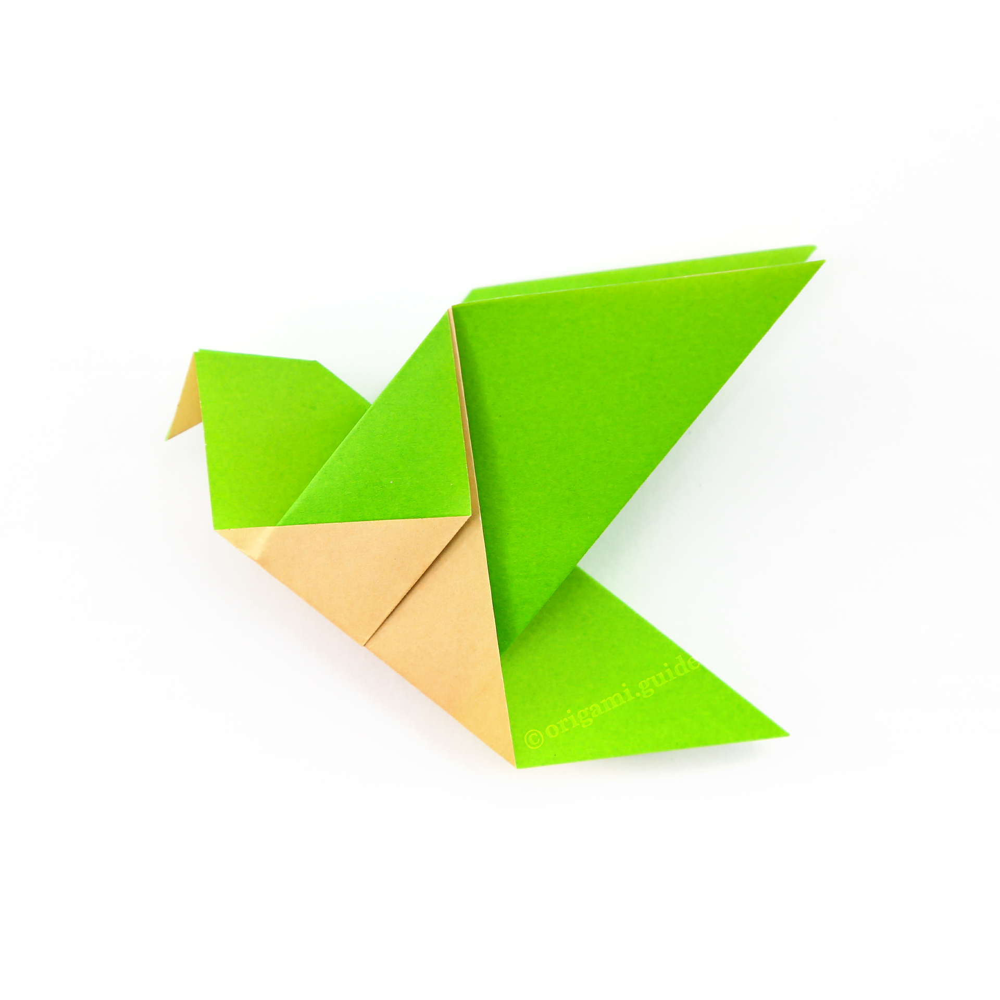
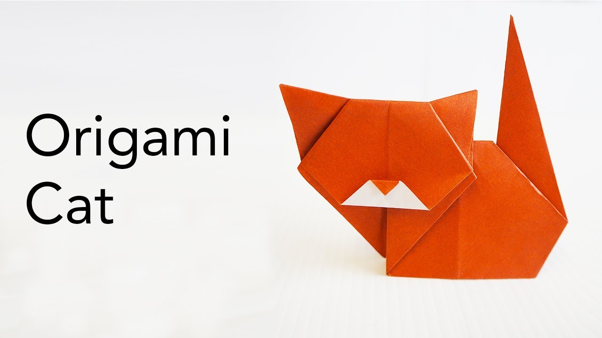
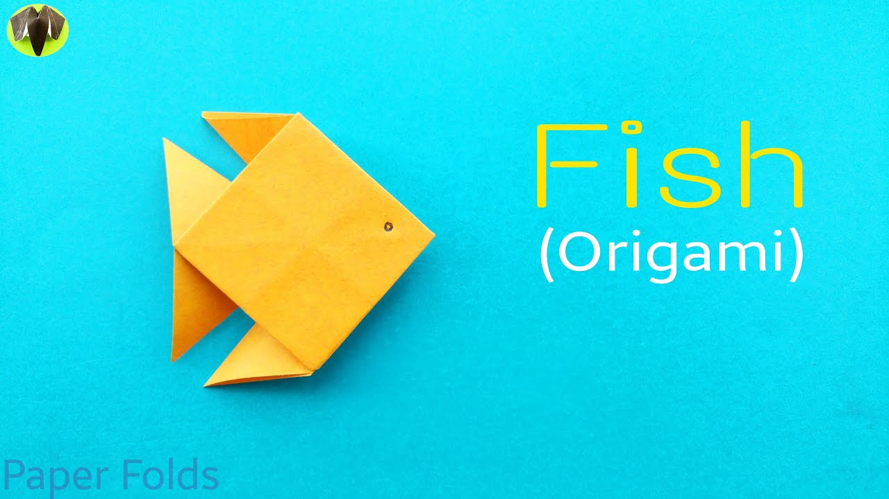

Origami Designs
step by step diagrams are probably the easiest to follow way to show how to fold things our of paper. Trying to find good origami instruction on the internet can be a lot of work. To hwlp you search we have put up the largest database of free origami designs anywhere on the internet.

- There are two types of camels: One humped or “dromedary” camels and two humped Bactrian camels.
- Camels have three sets of eyelids and two rows of eyelashes to keep sand out of their eyes.
- Camels have thick lips which let them forage for thorny plants other animals can't eat.
- Their sense of smell is at least 40x better than ours.
- Dogs don't sweat like we do
- Some are fast and could even beat a cheetah!

- Pigeons can recognize human faces.
- Crows and ravens are extremely intelligent
- Chickens and ostriches are the closest modern relatives to Tyrannosaurus rex.

- There are 6,000 species of frogs across the world.
- They display vibrant colours
- Frogs can drink water through their skin.

- Cats are believed to be the only mammals who don't taste sweetness
- Cats are supposed to have 18 toes
- Cats can jump up to six times their length.

- Fish can drown too!
- Humans have 9,000 tastebuds, but Catfish have over 27,000.
- Did you know fish can make sounds